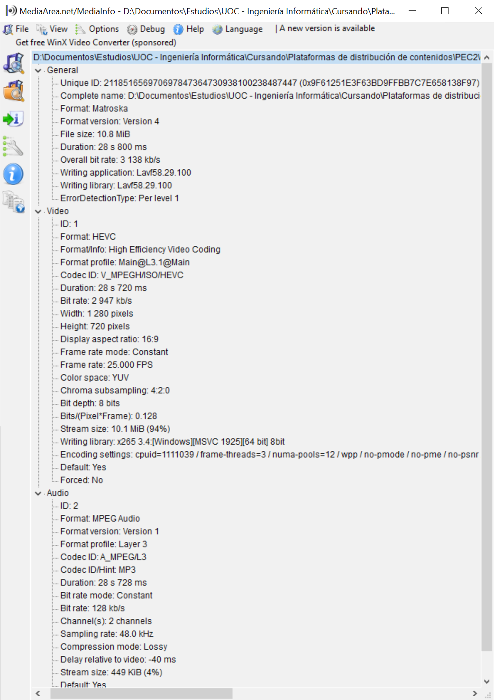
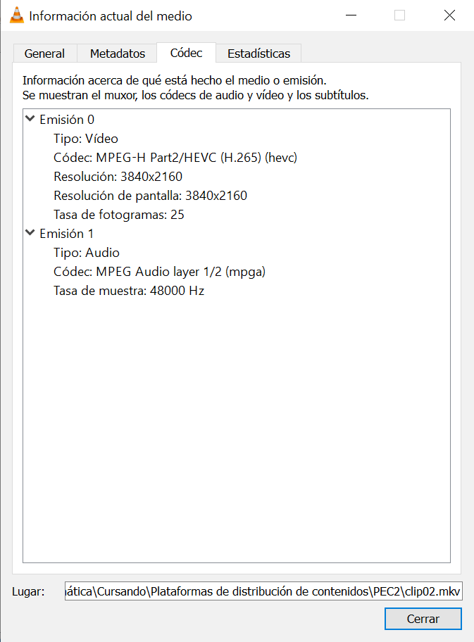
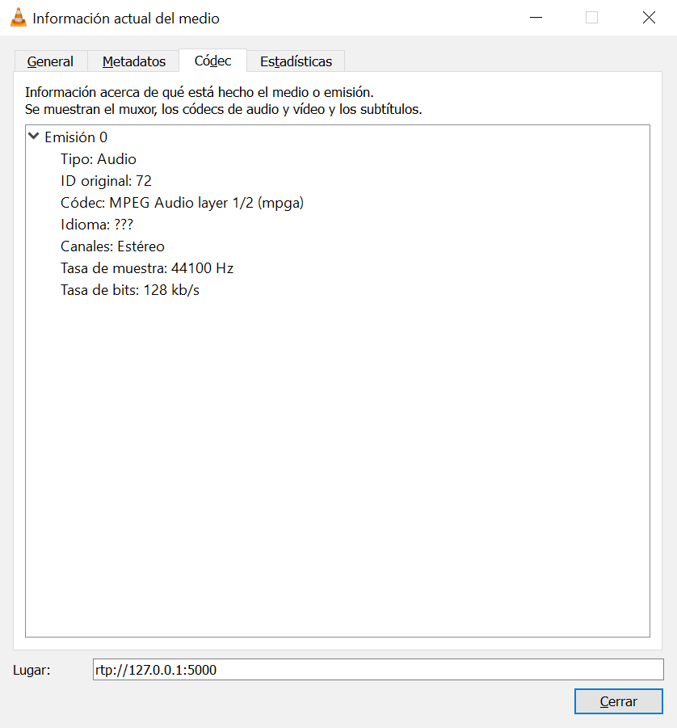
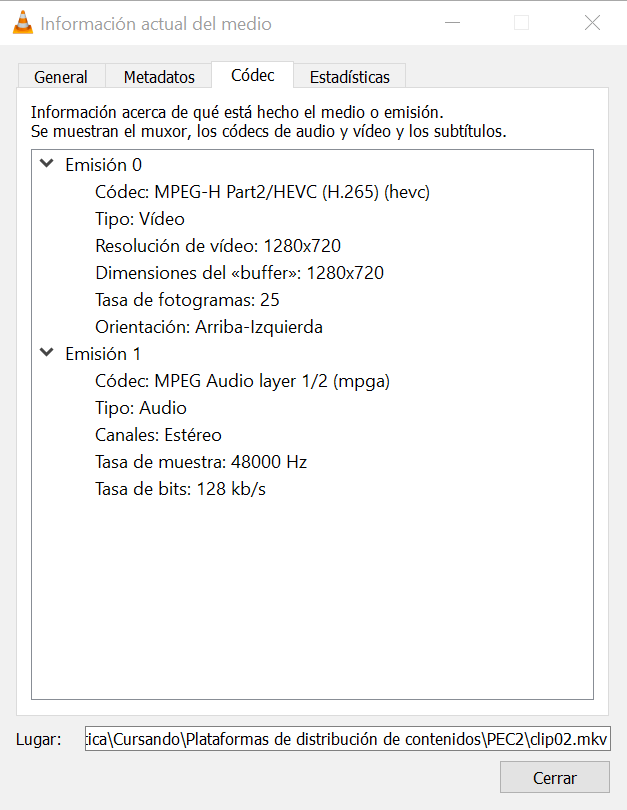
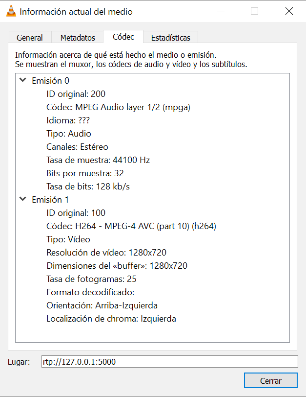

Tarea 2.9
Realiza de nuevo las tareas 2.7 y 2.8 pero con el clip codificado con Avidemux en HEVC (x265) a 3000 Kbps y MP3 con contenedor MKV, denomínalo clip02. ¿Qué diferencias encuentras?
La captura de MediaInfo muestra como el clip ha sido codificado con HEVC a una tasa de bits de 3.000 kbit/s, con el códec de audio MP3 y almacenado en un contenedor MKV.
Hasta este apartado la versión de VLC utilizada para la realización de la práctica ha sido la 2.2.8, sin embargo, existe un bug solucionado en la versión 3.0.12 que genera problemas en la transcodificación de clips codificados con el códec de vídeo HEVC. Como se muestra en las capturas mostradas a continuación, el receptor no se recibe el flujo de vídeo.
| Emisor | Receptor |
|---|---|
|  |  |
Si se realiza el aparatado con la versión de VLC 3.0.12 se puede observar como tras la transcodificación el flujo de vídeo visto por el receptor está codificado con AVC (H.264) y no coincide con el flujo códec del flujo de origen. Debido al proceso de transcodificación no se aprecian cambios significativos en la calidad de imagen ya que las características del flujo emitido se mantienen.
| Emisor | Receptor |
|---|---|
|  |  |